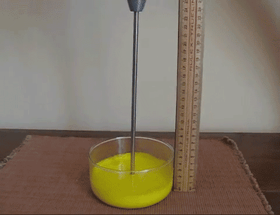
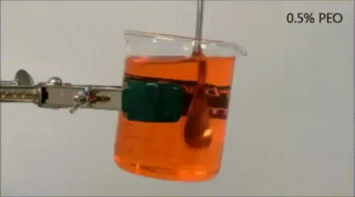
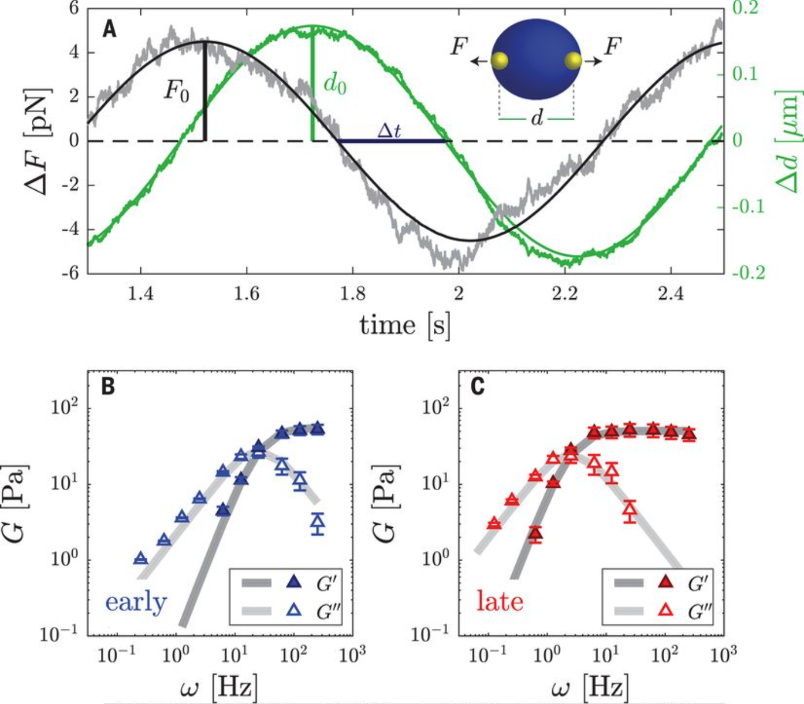

Measuring viscoelastic properties#
Viscoelastic fluids and gels are materials that exhibit both viscous and elastic properties. These materials do not fit neatly into the categories of solid or liquid but display behaviors characteristic of both, depending on the conditions.
Key Concepts#
Viscosity and Elasticity:
Viscosity: A measure of a fluid’s resistance to flow. Higher viscosity means a fluid flows less easily.
Elasticity: The ability of a material to return to its original shape after deformation.
Viscoelasticity: The property of materials that exhibit both viscous and elastic characteristics when undergoing deformation.
Shear Thinning and Shear Thickening#
Viscoelastic fluids can exhibit varying flow behaviors under shear stress:
Shear Thinning (Pseudoplastic):
In shear thinning fluids, the viscosity decreases with increasing shear rate.
Examples: Ketchup, paint, and blood.
These fluids become less viscous (thinner) when agitated or stirred. Ketchup (Shear Thinning):
At rest, ketchup is relatively thick and does not flow easily.
When shaken or squeezed, it becomes thinner and flows more easily, making it easier to pour.
Shear Thickening (Dilatant):
In shear thickening fluids, the viscosity increases with increasing shear rate.
Examples: Cornstarch in water (oobleck) and some types of sand in water mixtures.
These fluids become more viscous (thicker) when subjected to higher shear rates. Oobleck (Shear Thickening):
A mixture of cornstarch and water that behaves as a solid under sudden impact or shear but flows like a liquid under gentle movement.
When quickly agitated or compressed, oobleck becomes very hard and resists deformation.

Complex Fluid Climb and Siphon Experiment#
The complex fluid climb experiment, also known as the Weissenberg effect, involves observing the behavior of a viscoelastic fluid when subjected to rotational shear. In this experiment, a rod or a cylinder is inserted into the fluid and rotated. Unlike Newtonian fluids, which typically move outward and downward due to centrifugal forces, viscoelastic fluids exhibit an unusual behavior: they climb up the rotating rod. This phenomenon occurs because the elastic stresses in the fluid cause it to move in the direction of the applied shear, demonstrating the unique viscoelastic properties of the material. This experiment helps illustrate the combination of viscous and elastic behaviors in complex fluids.


Liquid-Liquid phase separation in biomolecular condensates#
Ref: Brangwine, C.P. et al., Science, (2009)
Viscoelastic properties of the condensed phase#
Ref: Jawerth, L. et al., Science (2020)

Ref: Jawerth, L. et al., Science (2020)
Rheological Properties#
Understanding viscoelastic materials involves several rheological properties:
Uniaxial Deformation Shear:
Involves stretching or compressing the material along one axis.
Important in understanding how materials respond to tensile (pulling apart) and compressive (pushing together) forces.
Bulk Modulus (K):
A measure of a material’s resistance to uniform compression.
Defined as the ratio of pressure increase to the resulting relative decrease in volume.
High bulk modulus indicates incompressibility.
Shear Modulus (G):
A measure of a material’s ability to resist shear deformation.
Defined as the ratio of shear stress to shear strain.
Important for understanding how a material deforms under shear stress.
Viscoelastic Models#
Several models help describe the behavior of viscoelastic materials:
Maxwell Model:
Represents the material as a combination of a purely viscous damper and a purely elastic spring in series.
Useful for describing materials that exhibit fluid-like behavior over long timescales and solid-like behavior over short timescales.
Kelvin-Voigt Model:
Represents the material as a purely viscous damper and a purely elastic spring in parallel.
Useful for materials that exhibit both instantaneous elastic deformation and time-dependent viscous flow.
Molecular Dynamics study of Mechanical and Viscoelastic properties:#
In order to go through step by step lets consider the simulation framework. Simulation might contains several files. But here we mainly focus on:
a)
run.in– it cpntains mostly all the informationsb)
system.data– particles, positions, bonds, angles, information
Shear#

Fig. 2. Simple oscillatory shear along xy direction is applied.
system_gel.data: A tetramer gel system
LAMMPS data file via write_data, version 2 Aug 2023, timestep = 1000000, units = lj
21000 atoms
2 atom types
21993 bonds
1 bond types
19986 angles
1 angle types
0 35 xlo xhi
0 35 ylo yhi
0 35 zlo zhi
Masses
1 1
2 1
Atoms # full
2771 132 1 0 15.325304101690698 13.569602890031291 0.22724463073395346 0 0 0
16644 793 1 0 8.706808125786711 2.5899575178796197 0.6472686771441266 0 0 1
10555 503 1 0 13.369029049350576 12.681530432159494 0.27238197806798187 0 0 1
20166 961 1 0 0.07835850114160828 3.28781233901114 0.9412351578898016 0 0 1
18902 901 1 0 4.3618649478722284 0.8196846585265288 0.2734712869132502 0 1 1
.
.
.
Bonds
1 1 2771 2772
2 1 16644 16645
3 1 10555 10556
4 1 20166 20167
5 1 20166 20177
6 1 18902 18903
7 1 18913 18914
8 1 16645 16646
9 1 2963 2964
10 1 16643 16644
11 1 8045 8046
12 1 4377 4378
13 1 5388 5389
.
.
.
Angles
1 1 2770 2771 2772
2 1 16645 16644 16643
3 1 10554 10555 10556
4 1 18901 18902 18903
5 1 18912 18913 18914
6 1 16644 16645 16646
7 1 2962 2963 2964
8 1 16642 16643 16644
9 1 8044 8045 8046
10 1 4376 4377 4378
11 1 5389 5388 13535
12 1 11690 11691 11692
13 1 8955 8956 8957
14 1 16319 16320 16321
15 1 20613 20614 20615
.
.
.
Shear simulation: run_shear.in: LAMMPS scrip for shear simulation
# LAMMPS Simulation Initialization
units lj
atom_style full
# Bond and Angle Styles
bond_style hybrid fene
angle_style hybrid harmonic
# Pair Styles
pair_style hybrid lj/cut 1.122
pair_modify shift yes
special_bonds lj 0.0 1.0 1.0
# Neighbor Settings
neighbor 0.3 bin
neigh_modify every 1 delay 0 one 10000
# Boundary Conditions
boundary p p p
# Log File
log log.nvt.txt
# Read Initial Configuration Data
read_data system_longtime_gel.data
# Pair Coefficients
pair_coeff * * lj/cut 1.0 1.0
# Bond Coefficients
bond_coeff 1 fene 20.0 1.5 1.0 1.0
# Angle Coefficients
angle_coeff 1 harmonic 10.0 150
# Group Definitions
comm_modify cutoff 5.0
group poly type 1
group water type 2
# Variables
variable temperature equal 1.0
# Change Box to Triclinic
change_box all triclinic remap units box
# Stress Computations
compute peratom all stress/atom NULL
compute p all reduce sum c_peratom[*]
variable paxx equal c_p[1]/vol
variable payy equal c_p[2]/vol
variable pazz equal c_p[3]/vol
variable paxy equal c_p[4]/vol
variable paxz equal c_p[5]/vol
variable payz equal c_p[6]/vol
variable p1 equal "xy"
# Time and Damping Variables
variable Tdamp equal 100*dt
variable time equal step*dt
variable freq equal 10^4
variable osci equal 20
variable runtime equal round(v_freq*v_osci/dt)
variable writestress equal 10
variable writedump equal round(v_runtime/100)
variable gamma0 equal 0.25*xhi
# Reset Timestep and Timestep Setting
reset_timestep 0
timestep 0.005
# Trajectory Output
dump 11 all custom ${writedump} traj_nvt_langevin.lammpstrj id mol type x y z vx vy vz
thermo_style custom step temp pe etotal vol epair ebond eangle pxx pyy pzz
thermo 100
fix flan all langevin ${temperature} ${temperature} ${Tdamp} 5428 254
fix fnvt all nvt/sllod temp ${temperature} ${temperature} ${Tdamp}
fix fdef all deform 1 xy wiggle ${gamma0} ${freq} remap v
fix fshear all print ${writestress} "${time} ${p1} ${paxx} ${payy} ${pazz} ${paxy} ${paxz} ${payz}" file data_shear_sos.txt screen no
run ${runtime}
write_data system_after_shear.data nocoeff
unfix fnvt
unfix flan
unfix fdef
unfix fshear
print "All done"
Post processing visualization#

A typical elastic modulus \(G^{\prime}\) and viscous \(G^{\prime\prime}\) for crosslinked gel systems look like:
\(G^{\prime}(\omega) = \frac{\sigma}{\gamma} \cos \delta\)
\(G^{\prime\prime}(\omega) = \frac{\sigma}{\gamma} \sin \delta\)
{kind=link}
Output: data_shear_sos.txt:
# Fix print output for fix fshear
time xy Sxx Syy Szz Sxy Sxz Syz
0 0 -0.6408251793482 -0.607475157552665 -0.637844317279868 -0.0551625587474236 -0.0148356574731238 -0.00367877475844413
0.05 0.000274889357143593 -0.615106955723178 -0.611208510528889 -0.650953011271714 0.0143268753678577 -0.0387073791594812 0.00698677778765323
0.1 0.000549778714017179 -0.687896815090172 -0.641169537335123 -0.628352125834441 -0.014268038643641 -0.0300823514720603 -0.0257547071878896
0.15 0.000824668070343648 -0.642382349122376 -0.662937032687242 -0.649062962274571 -0.0499979878122786 -0.0277635217190935 -0.0112216607704475
0.2 0.0010995574258601 -0.606464651850268 -0.660333145451155 -0.643922533629109 -0.0196481208597465 -0.0236831059711317 0.0159426962266691
0.25 0.00137444678029652 -0.601935278607674 -0.652086713103282 -0.695032710297119 0.00217110690920496 0.0131498814919214 0.00250625545337565
0.3 0.00164933613336871 -0.587592056792644 -0.691936806704364 -0.71990119145136 -0.00351691661496423 0.00691573660547977 0.0307890895602134
0.35 0.00192422548481375 -0.676750766875859 -0.680164000413218 -0.731708811360654 -0.0105928805913106 0.0271211725850081 -0.03023002325341
0.4 0.00219911483436164 -0.716128523423737 -0.683679881261586 -0.689633872332161 0.0100254217520802 -0.00526854934079007 -0.00823774296881215
0.45 0.00247400418173527 -0.690373655991445 -0.735870676871987 -0.707372061824627 0.0573003713231892 0.0168333030961232 -0.0058566064156478
0.5 0.00274889352667174 -0.680321334487891 -0.643040866721938 -0.751000955371141 0.0104948438986918 -0.010057235725695 -0.0136595351542859
0.55 0.00302378286889393 -0.734130452060427 -0.639911182702289 -0.756034140582532 -0.00964698905129099 0.0113066273890128 -0.0157453184241778
Uniaxial deformation#

Fig. 2. Uniaxial deformtion along x direction is applied.
Uniaxial deformation: run_uniaxial.in: LAMMPS script read_data from previously generated system_gel.data file
# LAMMPS Simulation Initialization
units lj
atom_style full
# Bond and Angle Styles
bond_style hybrid fene
angle_style hybrid harmonic
# Pair Styles
pair_style hybrid lj/cut 1.122
pair_modify shift yes
special_bonds lj 0.0 1.0 1.0
# Neighbor Settings
neighbor 0.3 bin
neigh_modify every 1 delay 0 one 10000
# Boundary Conditions
boundary p p p
# Log File
log log.nvt.txt
# Read Initial Configuration Data
read_data system_longtime_gel.data
# Pair Coefficients
pair_coeff * * lj/cut 1.0 1.0
# Bond Coefficients
bond_coeff 1 fene 20.0 1.5 1.0 1.0
# Angle Coefficients
angle_coeff 1 harmonic 10.0 150
# Group Definitions
comm_modify cutoff 5.0
group poly type 1
group water type 2
# Variables
variable temperature equal 1.0
# Change Box to Triclinic
change_box all triclinic remap units box
# Stress Computations
compute peratom all stress/atom NULL
compute p all reduce sum c_peratom[*]
variable paxx equal c_p[1]/vol
variable payy equal c_p[2]/vol
variable pazz equal c_p[3]/vol
variable paxy equal c_p[4]/vol
variable paxz equal c_p[5]/vol
variable payz equal c_p[6]/vol
variable Tdamp equal 100*dt
variable time equal step*dt
variable Lt equal 50
variable L0 equal "v_Lt/35" # Box length Lx = 35
variable defrate equal 0.0025
variable p1 equal "35*(1+v_defrate*dt*step)"
variable runtime equal round((v_L0-1)/dt/v_defrate) #dt
variable writestress equal 10
variable writedump equal round(v_runtime/100)
reset_timestep 0
timestep 0.001
dump 11 all custom ${writedump} traj_nvt_langevin.lammpstrj id mol type x y z vx vy vz
#velocity all create ${temperature} 12945
thermo_style custom step temp pe etotal vol epair ebond eangle pxx pyy pzz
thermo 100
fix flan all langevin ${temperature} ${temperature} ${Tdamp} 5428254
fix fnvt all nvt temp ${temperature} ${temperature} ${Tdamp}
fix fdef all deform 1 x erate ${defrate} y volume z volume
fix fshear all print ${writestress} "${time} ${p1} ${paxx} ${payy} ${pazz} ${paxy} ${paxz} ${payz}" file data_uniaxial.txt screen no
run ${runtime}
write_data system_after_shear.data nocoeff
unfix fnvt
unfix flan
unfix fdef
unfix fshear
print "All done"
Output: data_uniaxial_deformation.txt:
# Fix print output for fix fshear
time x Sxx Syy Szz Sxy Sxz Syz
0 35.000000 -0.6408251793482 -0.607475157552665 -0.637844317279868 -0.0551625587474236 -0.0148356574731238 -0.00367877475844413
0.01 35.000875 -0.621312788720489 -0.606881357141303 -0.644678770521952 -0.0511411481982791 -0.0237776345325326 0.00714145696277534
0.02 35.00175 -0.61122838496561 -0.611275316156698 -0.650824558154617 -0.0366431283526107 -0.0355118632273659 0.00703895797680559
0.03 35.002625 -0.599968040506122 -0.608847916562781 -0.654761075001343 -0.0213849191404241 -0.0417029648613652 0.0105939378683937
0.04 35.0035 -0.575343889729728 -0.613636308286129 -0.651717843113109 -0.00566485527031936 -0.0379837960380336 0.0175866178829605
0.05 35.004375 -0.565293160635508 -0.622578894609871 -0.649949365488638 -0.00190860694200052 -0.0338705032502464 0.0137738188457549
0.06 35.00525 -0.575783870366787 -0.629736559151776 -0.651112944769633 -0.00826323175064375 -0.0255275782117685 -0.0020386583115917
0.07 35.006125 -0.60334203862936 -0.638228196672484 -0.651825791267814 -0.0194175272794261 -0.024149993283969 -0.0217344303778077
0.08 35.007 -0.634617923121244 -0.647223980917707 -0.644114782760748 -0.0267848171618558 -0.0222449367843963 -0.0352731376543048
0.09 35.007875 -0.653034481856895 -0.654508168490345 -0.627874003940878 -0.0348812114580562 -0.0167936777793838 -0.0330136655734571
0.1 35.00875 -0.649637190867702 -0.666341061593695 -0.616582457473135 -0.0405969040856942 -0.00712274323393126 -0.0269036967689667
0.11 35.009625 -0.655148270433206 -0.678748781228686 -0.624170732703299 -0.0415506283040549 0.01185879624761 -0.0319454062623837
0.12 35.0105 -0.66422694580121 -0.679853079381409 -0.648568399478468 -0.0479967862337217 0.014859749949221 -0.0327446867853413
0.13 35.011375 -0.670191716172108 -0.673573167432807 -0.668581391003215 -0.0454629051153325 0.00789340455515124 -0.0279055294051499
0.14 35.01225 -0.67145342710497 -0.675027076572877 -0.671682192443349 -0.0416989782040736 -0.00943592261317204 -0.0227235192925155
0.15 35.013125 -0.665585128537323 -0.673768453695297 -0.662263533246906 -0.0375245169669749 -0.0227822953083807 -0.0193783461326698
0.16 35.014 -0.63835438707388 -0.674578847389607 -0.646827237300927 -0.0356003187391781 -0.0313156278382848 -0.0172613362158874
{kind=link}